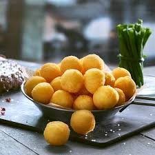

1. Empanada estilo salteña

Ingledientes
Para 6-8 personas
Carne magra (cuadrada, bola de lomo, tapa de nalga, nalga) .......................................................................................... 1 Kg
Cebolla ................................................................................................... 700 g
Morrón rojo ............................................................................................................. 300 g
Cebolla de verdeo ............................................................................................. 250 g
Papa ............................................................................................. 400 g
Grasa de cerdo ................................................................................... 200 g
Huevos L ............................................................................................. 6
Sal
Orégano
Ají molido
Comino
Pimentón
Como hacer Empandas estilo salteñas tradicionales
Dificultad: Medio
Tiempo total .............. 45 m
Elaboracion ............ 20 m
Cocción ............ 25 m
Pelar las cebollas y limpiar el morrón retirando las semillas y nervaduras. Luego cortar en cubos del mismo tamaño. Colocar en una olla la grasa, esperar a que levante temperatura y poner el morrón unos minutos, luego poner la cebolla y agregar un poco de sal. Esperar hasta que la cebolla se transparente, luego agregar la carne previamente cortada a cuchillo en dados de 1cm. x 1cm. aproximadamente. Cocinar unos minutos. Luego agregar las papas previamente hervidas y cortadas en dados, la papa no debe estar completamente cocida, sino se romperá en el picadillo y formará una pasta. Retirar del fuego unos minutos antes de terminar la cocción, condimentar, dejar enfriar. Agregar la cebolla de verdeo y el huevo duro picados justo antes de armar la empanada. Armar las empanadas utilizando tapas de 13 cm. Luego freír en grasa hasta que estén doradas, también se pueden cocinar en horno a 250ºC durante 12 minutos aproximadamente.
Generalmente se comen acompañadas de una salsa preparada con tomate triturado, ají picante, sal y limón. En algunos casos se utiliza ajo picado y hojas de laurel para dar sabor, y se coloca en el fondo de la olla justo antes de poner la cebolla. También se les puede poner aceitunas o pasa de uva, según el gusto de cada uno.
2. Papas noisette
Ingledientes
Para 4 raciones
Papas ...................................................................................... 1 Kg
Aceite ..................................................................................................................... c/n
Sal
Ajo
Perejil
Pimienta o Aji molido
Como hacer Papas Noisette
Dificultad: Facil
Tiempo total .............. 25-30 m
Cocción ............ 25-30 m
Pelar y lavar las papas, hacer bolitas con una cucharita especial para hacer noisette. Poner a en una olla con agua fría, sin sal, hacerlas hervir hasta que se cocinen mas o menos 2 o 3 minutos (así no se recocinan es una blanqueada para tiernizar), pero tienen que quedar consistentes (no blanditas). Colar las papas noisette y secarlas.
Colocar las papas dentro de la olla Essen untada con aceite, e ir girando hasta que estén doraditas. Si las hacen fritas utilizar abundante aceite caliente. Freír hasta que queden doradas, retirar y escurrir sobre papel absorbente. Salar al servir.